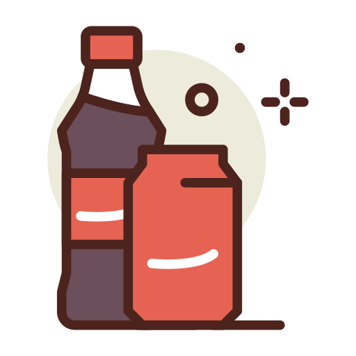

HOME > 회사소개 > 연혁
연혁
LG생활건강과 코카-콜라 음료가 새로운 역사를 이어갑니다.
1950~1970's
-
- 1976. 04
- '킨 사이다'출시
-
- 1974
- 한국코카-콜라 설립
-
- 1973
- 범양식품이 대구/경북/충청지역 보틀러로 제품생산 및 판매
-
- 1971
- 호남식품이 호남지역 보틀러로 제품생산 및 판매
-
- 1969
- 우성식품이 부산/경남지역 보틀러로 제품생산 및 판매
-
- 1968. 09
- 한양식품이 국내 최초의 보틀러로 제품생산 및 판매
-
- 1950
- 한국에 '코카-콜라' 최초 소개
1980~1990's
-
- 1999. 10
- 여주공장, 동양 최대 음료생상공장으로 확장 완료
-
- 1998. 09
- 코카-콜라아마틸(주)이 한국코카-보틀링(주) 인수
-
- 1997. 09
- 국내 단일 보틀링시스템 구축
-
- 1996. 11
- 한국코카-콜라보틀링(주) 설립
-
- 1994. 06
- 스포츠음료 '파워에이드'출시
-
- 1993
- 두산음료가 한양식품 인수
-
- 1983. 06
- 국내 최초로 PET병 제품생산
-
- 1982. 10
- 국내 최초로 테트라 팩(음료용 종이용기) 도입
2000's
-
- 2009. 12
- 여주공정 식품의약품 안전청 HACCP 인증 획득
-
- 2009. 05
- '휘오 제주 V워터+' 비타민음료 '글라소 비타민워터'출시
-
- 2008. 12
- 국내 최초 탄소성적표지 인증(코카-콜라 500ML)
-
- 2008. 11
- 양산공장 환경부장관상 수상(폐기물 감량 우수기업)
-
- 2007. 10
- LG생활건강이 한국 코카-콜라보틀링(주) 인수
-
- 2005. 04
- 주스 전문 브랜드 '미닛메이드'출시
-
- 2004. 11
- 한국 코카-콜라 청소년재단 설립
-
- 2002. 12
- 보건복지부 장관 표창(푸드뱅크 사업지원)
-
- 2000. 09
- 경기도지사 표창(포천시 수해지원)
2010's
-
- 2015. 05
- 양산공장 명예산업안전감독관 수범사례 최우수상 수상
-
- 2015. 03
- 코코넛 워터 'ZICO' 출시
-
- 2014. 12
- 여주공장 탄산 PET 고속라인 신설
-
- 2014. 08
- 탄산수 '씨그램' 출시
-
- 2013. 03
- 차 '태양의 마테차' 출시
-
- 2012. 12
- 배출권 거래제 시범사업 참여 우수기업 환경부 장관상 수상
-
- 2011. 11
- 코카-콜라 음료 OHSAS 18001 인증 획득
-
- 2010. 10
- 양산공장 식품의약품안전청 HACCP 인증획득
-
- 2010. 09
- 환경부장관 표창_여주공장
-
- 2010. 04
- (주)한국음료 인수